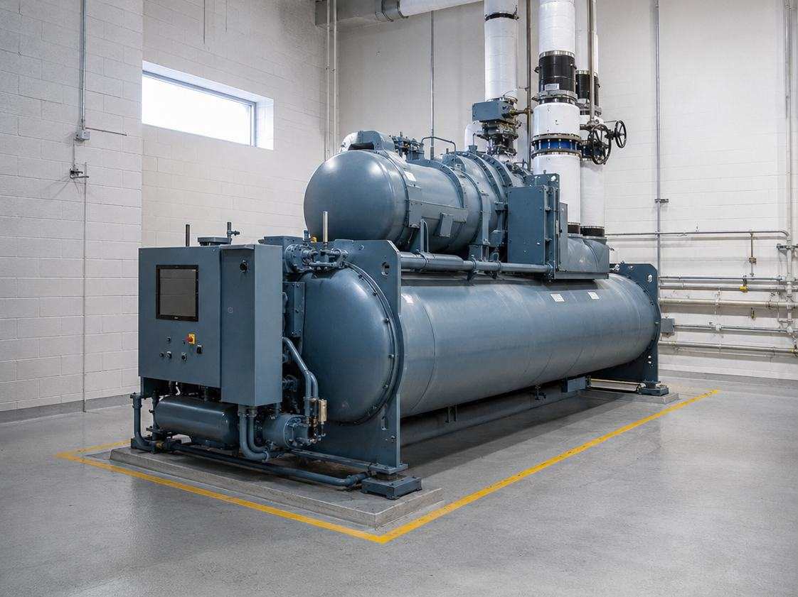
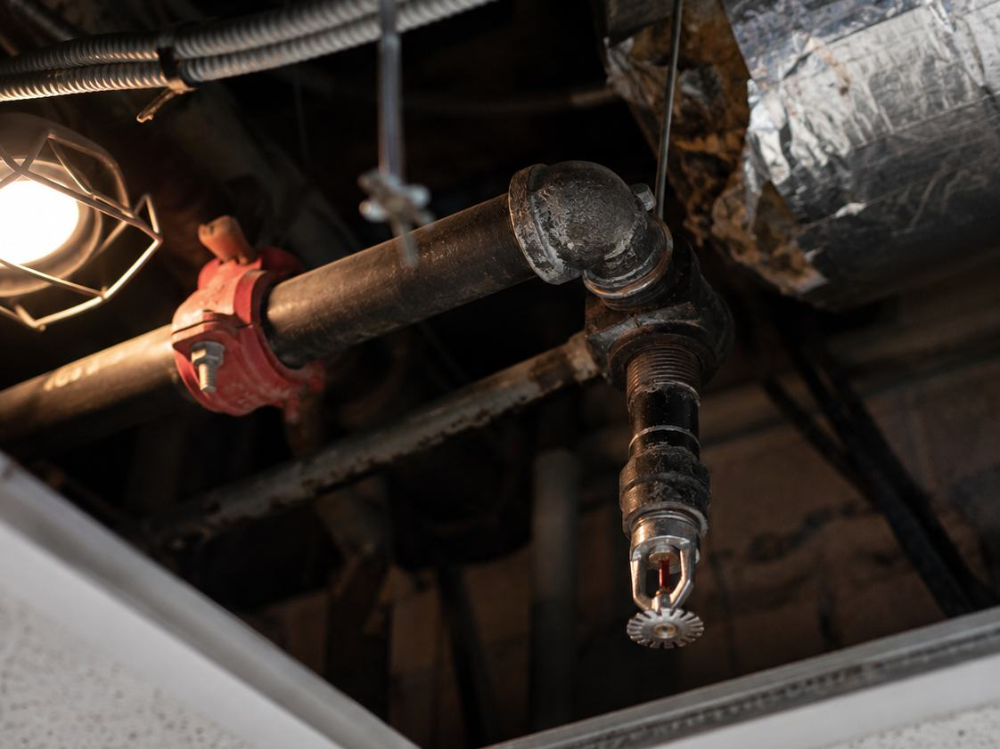

The constraint
An inpatient mental health ward cannot be emptied for a renovation. Patients are admitted, and the wards that are not under construction stay full. That single fact shaped every decision on this project.
Construction ran in four primary phases with only one or two wards down at a time, so the facility kept operating continuously. Every other ward remained fully occupied, which meant patient safety, infection control and operational continuity were design requirements rather than field concerns to sort out later.
Front loading the infrastructure
The strategy that made the phasing work was to do the hard part first. Alares designed the MEP and fire protection systems so every major service was delivered into the addition during phase one, including a new chiller that simplified the plumbing layouts between floors.
Getting the infrastructure in early meant the later phases were fit out rather than construction. Each subsequent ward could be brought online without opening up the building again, which is what kept the disruption to patient care as small as it was.
What the site investigations found
Detailed site investigations turned up two problems that were not in anyone's scope. The fire protection system did not meet applicable codes or VA design guidelines. Separately, the electrical backup system had deficiencies of its own.
Neither had to be our problem. Both became part of the design. We incorporated a new fire pump to bring the fire protection into full compliance, and corrected the backup power deficiencies to meet VA and NFPA standards, all within the same project rather than deferred to a future one.
This is the argument for investigating thoroughly before designing. Two life safety issues in an occupied inpatient building were found, engineered and resolved in the course of a renovation that was nominally about privacy and comfort.
The outcome
Brockton got code compliant MEP and fire protection systems, a smoother multi phase construction sequence, and two pre existing life safety problems corrected without interrupting day to day hospital operations. The design supports what the VA set out to do on this building, which was to improve patient safety, privacy and comfort in mental health care.

